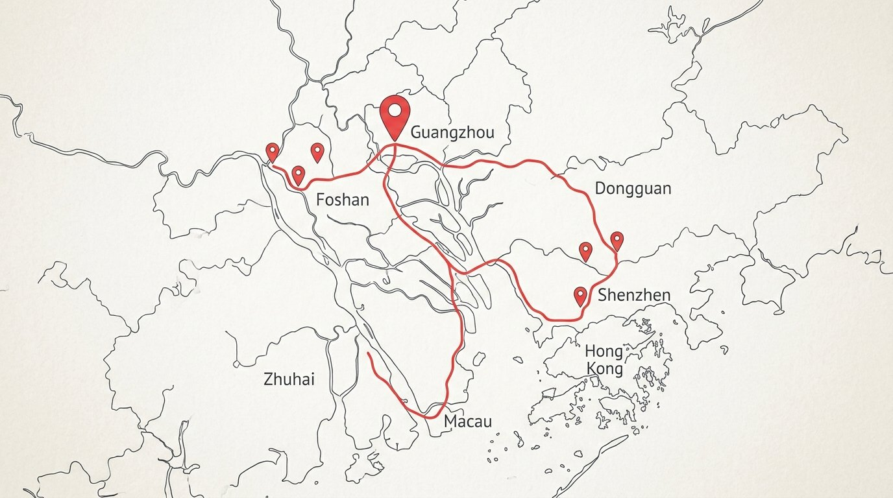
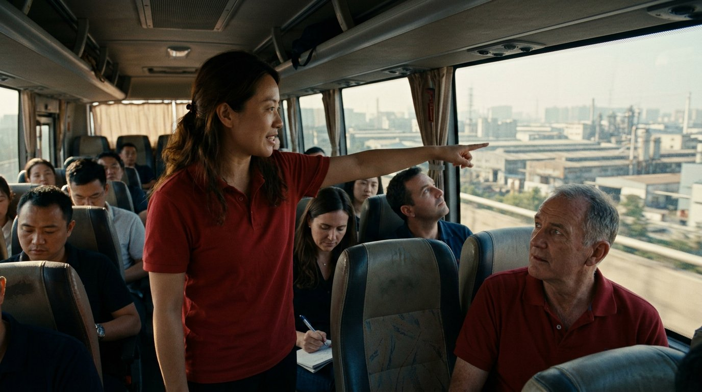
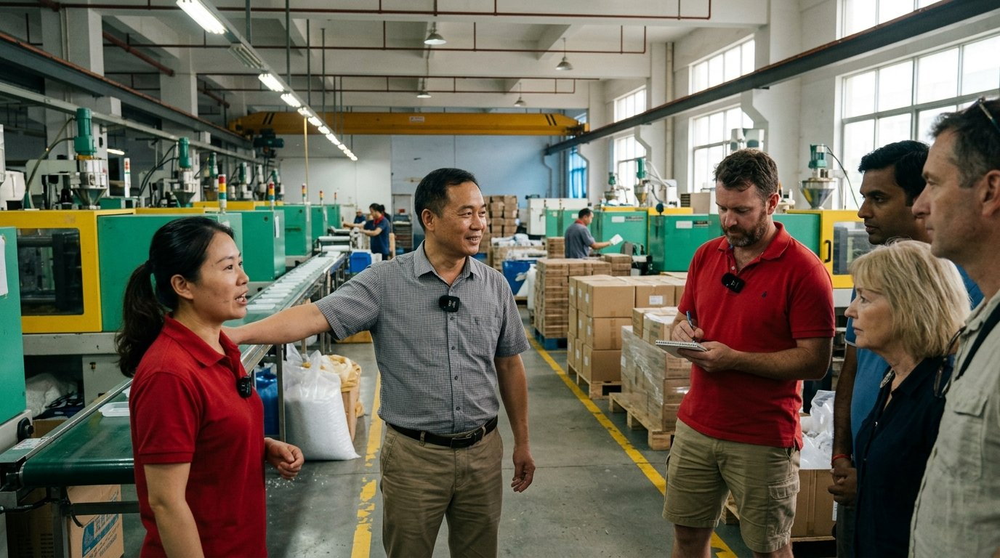
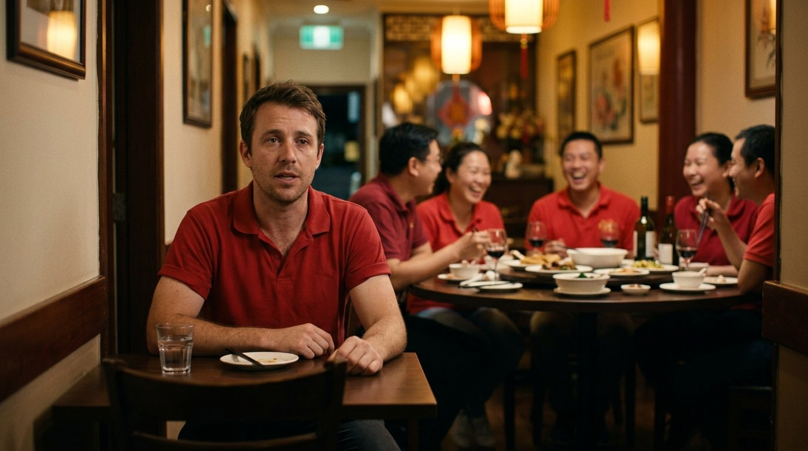
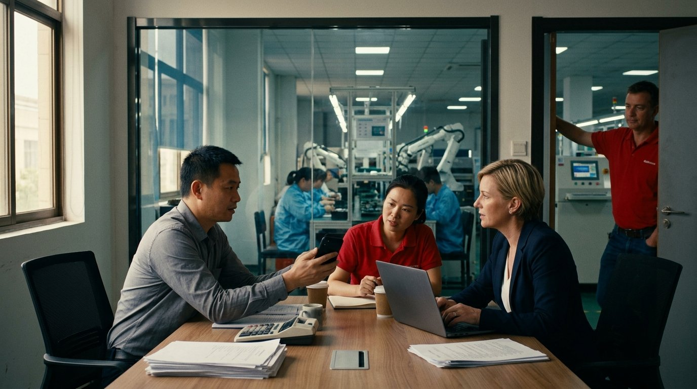
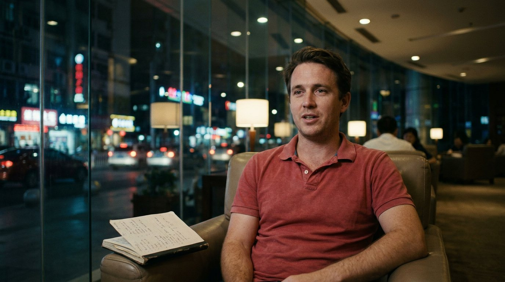
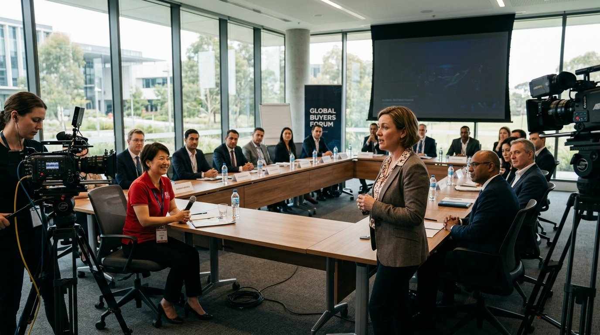
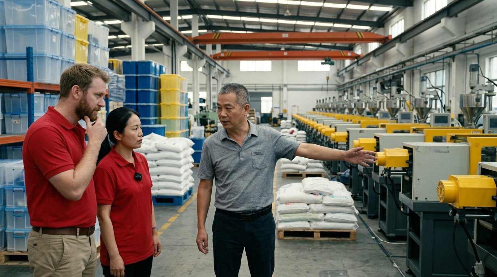
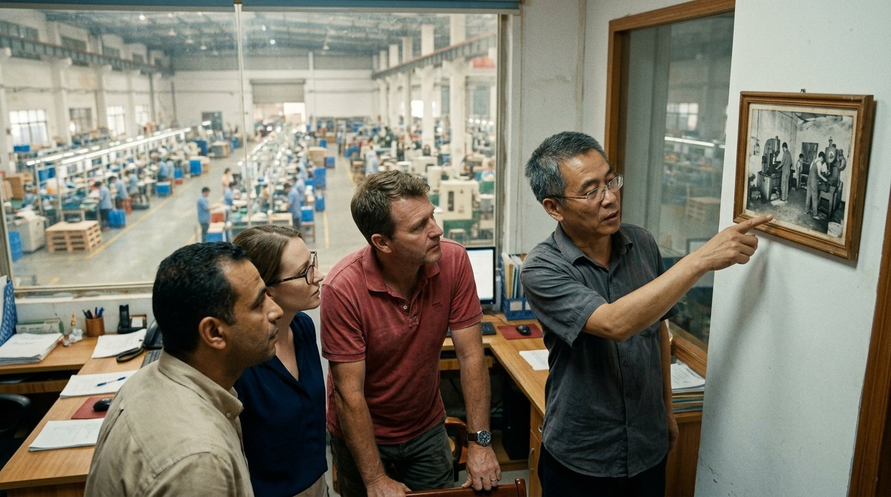
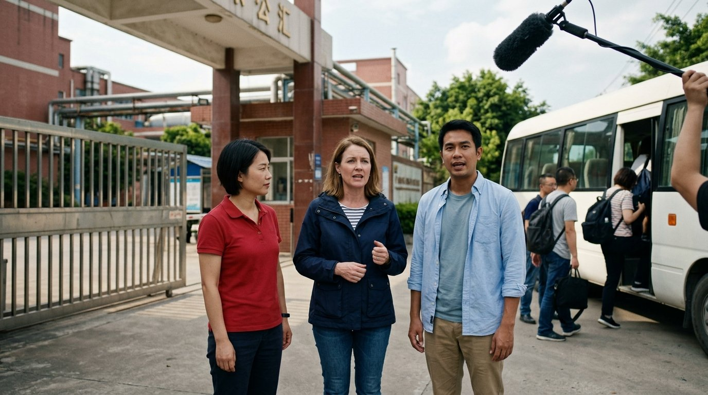

Storyboard and shooting plan: Sourcing Trip Diaries, Tour 1
Before you start
The film is one episode of about eleven and a half minutes, told over three days. Each block below is a beat in the order it plays. The six factories sit inside Days 1 and 2 and all follow the same playbook. Click a block to jump to it.
Every checklist item is a bullet. Items with a chevron open to show the questions to ask, a script of what we expect to hear, or what to capture.
Dawn on the coach out of Guangzhou, Joshua in his seat with the group behind him.
Capture checklist
- CaptureJoshua's open, to camera, one clean takeAsk
- Cathy, off camera: “Josh, tell me what the next three days are. Who's on the bus, where are we going, and what are we asking.”
- “And have you ever been inside a factory?”
Expected scriptJoshua: “It's six in the morning and there are fourteen importers on this bus. Australia, Singapore, the UK, Thailand. Over the next three days we're going into six factories across Foshan and Dongguan: homeware today, appliances and electronics tomorrow. And at every single one we're asking the same three things. How do they keep it this cheap. How did they get this big. And how do they get paid. I work for WorldFirst, so I know how the money moves. I have never once seen where the stuff gets made. That changes today.”
- B-rollWide of the group on the coach for the cutawayWhat to capture
Faces, notebooks, the road through the window. No speech needed. Ten seconds of steady wide, ten seconds of close details.

An animated map; nothing to shoot on the day beyond Joshua's voiceover.
Capture checklist
- VoiceoverJoshua's voiceover for the map, recorded Day 3 eveningVoiceover script
Joshua: “Here's the route. Day one, an hour west to Foshan. Three homeware factories, and one question: how is it this cheap. Day two, east to Dongguan. Appliances and electronics, and two questions: how did they get this big, and how do they get paid. Day three, back into Guangzhou, to the place every one of these factories sells through. Six factories. Three days. Let's go.”

The coach into Foshan, Doris standing in the aisle, clients settling in and meeting each other.
Capture checklist
- CaptureDoris introduces the journey and the first factory, on the coachAsk
- Joshua: “Doris, where are we and what are we about to see?”
- Joshua: “Why Foshan? Why not anywhere else?”
Expected scriptDoris: “We're heading into Foshan. If you've got a plastic container in your kitchen, there's a decent chance it started within an hour of here. This is one of the biggest homeware clusters in the world, and the first factory we're going to makes exactly that: the storage boxes, the bottles, the things you never think about. They've been doing it for twenty years.” Joshua: “And they'll just let us walk in?” Doris: “They want you to walk in. You're the customer.”
What to captureIf the coach take is clean, done. If the audio is poor, Joshua asks the same two questions again at the first factory gate.
- OptionalClients introducing themselves and chattingExpected script
A client: “We sell homeware online in Melbourne, mostly kitchen. We've only ever bought through an agent, never seen a factory.” Another: “Third Canton Fair for me, first time past the booths.”
What to captureFriendly introductions and discussion, whatever happens. Who they are, what they sell, why they came. Do not stage three lines.

Three factory segments, about 65 seconds each, counter 1, 2, 3. Follow the factory playbook: intro, three questions, verdict.

The welcome dinner: a private room, a round table, red polos, toasts and the tea ceremony.
Capture checklist
- CaptureDoris and Joshua on the welcome dinner and why the table matters in sourcingAsk
- Joshua: “Doris, why is tonight part of a sourcing trip?”
- Joshua: “What should everyone at this table be doing right now?”
Expected scriptDoris: “In China the deal doesn't happen on the factory floor. It happens here. The factory visit is you checking them. Dinner is them checking you. Who you sat next to tonight is who picks up your call in six months.” Joshua: “So this is part of the sourcing.” Doris: “This is the sourcing. Swap WeChat. Ask what they're struggling with. You'll learn more about minimum orders over this table than you did all day.”
What to capture40 to 60 seconds at the table, both on mic, before the toasts start.
- B-rollThe best conversations and moments of the dinnerWhat to capture
Toasts, the tea ceremony, cards and WeChat exchanged, laughter. If a client conversation is good, let it run with the spare mic.
- CaptureJoshua's stamp after dinnerExpected script
Joshua: “Day one. Three factories, and every one of them answered ‘how is it this cheap’ with the same word: volume. Not cheap labour, not cutting corners. Two hundred machines, running all night, one product. Tomorrow we go to Dongguan and the questions get harder.”
What to captureOne take, quiet corner, 20 to 30 seconds.
The coach into Dongguan, early morning, Joshua and Doris in neighbouring seats.
Capture checklist
- CaptureCheckpoint lines, Joshua and Doris on the coachAsk
- Joshua: “Doris, what's different about today?”
Expected scriptJoshua: “Day two. Dongguan. Two questions today: how did they get this big, and how do they get paid.” Doris: “Yesterday was plastic. Today it's plastic with a circuit board inside. Appliances first, then electronics. These factories ship to sixty countries, and most of them started with four people.”

Three more segments, same playbook. Factory 5 gives the long slot to ‘how they got this big’, Factory 6 to ‘how they get paid’, which is the one WorldFirst moment.

The hotel in Dongguan at the end of the day, a quiet corner of the lobby.
Capture checklist
- CaptureJoshua's stamp with Doris, how he feels after six factoriesAsk
- Doris: “So. Six factories. What's in your head?”
- Doris: “What would you check now that you wouldn't have known to check on Monday?”
Expected scriptJoshua: “I came here to find out what the thing costs. Honestly I've stopped caring about that. What I've got is a list: ask to see the mould, ask for the test report not the certificate, ask how they want to be paid before you ask the price. None of that was on my list on Monday.” Doris: “That list is the trip.” Joshua: “Tomorrow I want to see where all of this gets sold.”
Arrival at the Alibaba Center in Guangzhou and the 1688 selection centre: a large building, long shelves, trend walls.
Capture checklist
- Capture1688 host or Doris explains 1688: what it is, how big, how the factories we visited sit on itAsk
- Joshua: “What is this place, and why does every factory we met this week sell here?”
- Joshua: “If I'm a buyer in Melbourne, what does 1688 change for me?”
Expected scriptHost, via Doris: “1688 is Alibaba's wholesale platform for China itself. For twenty years it's been where Chinese shops and brands find Chinese factories. Every factory you visited this week has a storefront here, and this centre is where we pick the products that are moving right now.” Joshua: “So this is the inside of the supply chain.” Host: “This is where China buys. And with WorldFirst, overseas buyers can pay these factories the same way Chinese buyers do.”
- CaptureJoshua's reaction in the selection centreExpected script
Joshua, picking up a product: “This is the one from Tuesday. The exact one. It was on a pallet in Dongguan two days ago and now it's on a shelf with a trend label on it.”
What to captureOne honest line on seeing the products from the factories on the shelves.
- B-rollThe might of the supply chain: building, shelves, trend walls, clients browsingWhat to capture
The arrival wide, the building, long shelf tracking shots, product close-ups, clients picking things up and reacting.
- VoiceoverJoshua's voiceover for the Day 3 contextVoiceover script
Joshua: “Day three. Back in Guangzhou, at the Alibaba Center. Yesterday we saw where it's made. Today we see where China buys it. 1688 is the wholesale marketplace behind almost everything on those factory floors, and the reason we're here is simple: with WorldFirst, buyers like the fourteen on this bus can now pay those factories directly.”

A meeting room at the Alibaba Center, partners presenting, the group at tables.
Capture checklist
- VoiceoverJoshua's voiceover over the workshopVoiceover script
Joshua: “The last afternoon is the workshop. 1688, WorldFirst and the people who've done this before, in one room, going through what happens after you get home: how to order, how to check, how to pay.”
- B-rollWorkshop coverage: presenters, the room, reactions, the sharing roundWhat to capture
Regular capture. Presenters wide and tight, the room listening, short reaction cutaways. No long slide footage.
After the workshop, on the dressed set. Follow the stage playbook. In the episode, two or three lines; the full interviews become standalone testimonials.
Option A: blue hour on the riverside with the Canton Tower behind Joshua. Option B: the Canton Fair opening party with the group.
Capture checklist
- CaptureOption A: Joshua's close at the Canton Tower, three takesExpected script
Joshua: “Three days ago I got on a bus to find out what it costs to make the stuff in my kitchen. I know now, and I'm not allowed to say it on camera. It doesn't matter. What I'm taking home is this: I know who makes it, I know what to check before I order, and I know how to pay them without losing three days and a chunk of the margin. Fourteen people on that bus know the same thing now. Next trip is spring. If you've been putting this off, stop.”
What to captureStill camera, blue hour, the line above, three takes.
- OptionalOption B: Joshua's close at the Canton Fair partyExpected script
Same script, delivered at the party with the group behind him, ending on: “Day one of the Canton Fair starts tomorrow. We've already been where the stuff comes from.”
What to captureOnly if the group attends and the sound is workable.
- B-rollCanton Fair party, if the group attendsWhat to capture
Twenty minutes of wide shots and candid moments, then stop.
Post-production only; nothing to shoot.
Capture checklist
- VoiceoverEnd card text and the six factory creditsVoiceover script
On screen: “China Sourcing Trip. Spring 2027. Register your interest.” Below: the six factory names, cities and websites, as approved by each factory.
Every factory: the playbook
Same shape at all six. The intro is written in advance from the factory's background. The three questions are the same every time; get whichever the factory will answer, hopefully all three. The verdict is ours and the clients'. Around 65 seconds per factory in the episode.
Pre-scripted per factory from their background: what they make, one interesting fact, who they make for if we can say it. Joshua shows the product listing on his phone, price visible. Lower third: factory name, city, website.
Capture checklist
- CaptureJoshua's intro with the product on his phoneExpected script
Joshua, at the gate or on the floor, phone up: “Factory two of six. This is [name], in Foshan. On my phone is their product on a marketplace at home: A$34. Behind me is where it's made. They've been doing this since [year], and if I'm allowed to say it, you've probably got one of theirs in a drawer.”
What to capture10 to 15 seconds, one take. Pre-written per factory from Doris's background notes. Doris takes the intro where the phone device does not fit.

The honest reason: volume, the cluster, their own moulds, materials, automation. One answer, on the floor, with the reason visible behind them.
Capture checklist
- CaptureThe owner on priceAsk
- Joshua: “How do you keep the price this low?”
- Follow-up if the answer is vague: “What's the one thing that would make it more expensive if you didn't have it?”
Expected scriptOwner, via Doris: “Volume. These machines don't stop. We run two hundred of them, twenty-four hours, one product family. The raw material comes from the next town. We own every mould, so there's nobody in between us and the customer. If I ran at half this size the price would double.”
What to captureOn the floor, the machines visible behind him, mic clipped on before the question. 20 to 40 seconds.

From workshop to factory. When they started, the first machine or first export order, how many people now. An old photo on the wall if there is one.
Capture checklist
- CaptureThe owner on how it startedAsk
- Joshua: “How did this start, and how did it get to this?”
- Follow-up: “What was the first order from overseas?”
Expected scriptOwner, via Doris: “2004. Two machines in a rented shed, my brother and me and two workers. The first export order was five hundred units to a customer in Melbourne who found us at the fair. He's still a customer. Now there are four hundred people here and we ship to forty countries.”
What to captureOffice or floor. If there is an old photo on the wall, film him pointing at it. 20 to 40 seconds.
- B-rollThe old photo, the licence wall, the first machine if it still existsWhat to capture
Detail shots that prove the story.
Which markets, which currencies, deposit terms, what used to go wrong. WorldFirst only where it is true, and once in the whole episode.
Capture checklist
- CaptureThe owner or finance person on markets and paymentAsk
- Joshua: “Who do you sell to, and how do they pay you?”
- Follow-up: “What used to go wrong with getting paid from overseas?”
- Only at the WorldFirst factory: “And now?”
Expected scriptOwner, via Doris: “Europe, Australia, Southeast Asia. Thirty per cent deposit before we start, the rest before shipping, in yuan or US dollars. Overseas payments used to take three or four days to land and we'd lose on the rate every time.” At the WorldFirst factory, the client in the group: “I convert in WorldFirst and pay him direct. He has it the same day.” Owner: “Same day. Then we start.”
What to captureOffice or floor, two-shot if the client who pays through WorldFirst is in the room. Both on mic. 20 to 40 seconds.

At the gate as we leave. What do you make of this factory, and what would you check before ordering here. Buyers talking to buyers; this is where ‘what not to miss’ lives.
Capture checklist
- CaptureTwo verdicts at the gateAsk
- Cathy, off camera: “What do you make of this factory?”
- Cathy: “What would you check before you ordered here?”
Expected scriptClient one: “Real factory, no question, you can see the moulds. I'd want the test report for my market before I ordered, not the certificate.” Client two: “I'd ask for a sample run of two hundred and see how they handle a problem. The ones that handle problems well are the ones you keep.” Doris: “And I'd ask who their biggest overseas customer is and watch how they answer.”
What to captureTwo clients, or one client and Doris, 15 to 30 seconds each, at the gate as the group boards. Spare mic or boom.
The stage: client and partner interviews
Once, on Day 3, after the workshop at the Alibaba Center. A dressed set with a clean backdrop, two cameras on the subject, Joshua asking off camera. In the episode they are two or three lines; in full they become standalone client and partner videos, website quotes and lifecycle email.
Three clients, picked by Cathy from who talked well on Days 1 and 2. One or two partners, arranged by Doris, who sends them the themes in advance.
Clients 10 to 15 minutes each. Partners 20 to 30 minutes. Changeover under three minutes.
Dark neutral backdrop or WorldFirst branded, soft key and rim light, subject on a stool, two cameras (wide and tight). The interviewer is not in frame and not on the recording.
Short questions, long answers. Every answer must contain the question, because the question gets cut: brief the client to answer in full sentences. Ask, then stay silent for three seconds. If an answer is good but long: “that was great, give it to me again in one sentence.” Clear every number the moment it is said: “can we use that figure publicly?” Trip questions before any WorldFirst question.
Each interviewee signs the release before sitting down. Tell them where it will be used and that they will see the edit before it goes out.
Two necessary questions, three optional. Pick the optional ones that fit the person.
Questions
- CaptureIntroduce yourself as if we have never met: name, company, what you sell, whereExpected script
“I'm Sarah, I run a homeware brand out of Melbourne. We sell kitchen storage online, about four thousand orders a month.”
- CaptureWhat did you learn this week that you could not have learned from home?Expected script
“That the minimum order is a conversation. Online it's a number on a page. On the floor it's ‘what if I take three colours’, and the answer changes.”
- OptionalWhy did you join this trip?Expected script
“Three Canton Fairs and I'd never been inside a factory. I wanted to see what's behind the booth.”
- OptionalWhat was the highlight?Expected script
“Watching the owner at factory five point at the photo of his first shed. That was the whole trip in one picture.”
- OptionalWhat surprised you most about China?Expected script
“How organised it is. I expected chaos and got a two-hundred-machine ballet.”
The standard customer story set: who they are, the problem before WorldFirst, why us, the results, and the one-sentence retake. All standard; the interviewer decides the order and the follow-ups. Clear every number as it is said.
Questions
- CaptureWho they are: what size is the business today, people, markets, orders?Expected script
“Six people, Australia and New Zealand, about four thousand orders a month, growing.”
- CaptureThe problem: take me back to before WorldFirst. How did money actually move from a customer's payment to your supplier's bank?Expected script
“Marketplace paid out to my Australian bank, I'd convert at the bank's rate, wire it, and wait. Three or four days, and I never knew the fee until the statement.”
- CaptureThe problem: what was the most painful part of getting paid or paying out?Expected script
“The waiting. The factory wouldn't start until the deposit landed, and I couldn't tell them when it would.”
- CaptureThe problem: what did that cost you, in fees, days or hours? Was there a moment it broke?Expected script
“About three per cent on every conversion, and once a whole shipment slipped a month because a deposit bounced back.”
- CaptureWhy us: what did you compare WorldFirst against, and what tipped it?Expected script
“My bank and two other fintechs. WorldFirst was the one that could pay straight into a Chinese supplier's account in yuan.”
- CaptureThe results: what actually changed after you switched? Put a number on itExpected script
“The supplier gets paid the same day. I save around two per cent on every conversion and I know the fee before I press send.”
- CaptureThe results: walk me through the same payment today. How long does it take?Expected script
“I convert in the app, pay the supplier, he sends me a screenshot an hour later. Done.”
- CaptureThe results: what does that let you do now that you could not do before?Expected script
“Order smaller and more often. I don't have to batch up to make the wire worth it.”
- CaptureSay it again in one sentenceExpected script
“WorldFirst means my factory gets paid today, so my order starts today.”
One question.
Questions
- CaptureWould you come on the next trip, and who should come with you?Expected script
“Yes. And I'd bring my supplier manager, because she's the one who asks the hard questions.”
The same trip questions as the clients, then how their company helps businesses source from China and their relationship with WorldFirst. After that the partner decides where to take it; Joshua follows and reacts. Doris sends the themes ahead, never the exact questions.
Questions
- CaptureIntroduce yourself and your company: name, role, what the company doesExpected script
Partner: “I'm Lin, I lead overseas buyer services at 1688. We help businesses outside China buy directly from Chinese factories.”
- CaptureThe trip: what was this week like for you, and what did you see that you did not expect?Expected script
Partner: “How quickly the buyers moved from looking to asking. By day two they were negotiating minimum orders on the factory floor.”
- CaptureHow does your company help businesses source from China?Expected script
Partner: “We list the factories, verify them, and give overseas buyers the same access a buyer in Shanghai has: the storefront, the price, the person to talk to.”
- CaptureWhat is your relationship with WorldFirst, and what does it make possible for the businesses you work with?Expected script
Partner: “WorldFirst lets an overseas buyer pay a factory on 1688 the way a Chinese buyer does, in yuan, the same day. That removes the step where most first orders stall.”
- OptionalHand over: what else do you want buyers to know?Expected script
Whatever the partner chooses. Joshua follows where they go and reacts; no further prepared questions.
What to captureLet it run. This part is theirs.